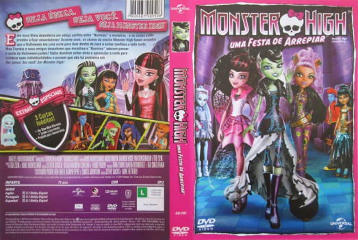

Outro Título:Monster High: Ghouls Rule
País:United States, 70 minutos
Idiomas falados:Espanhol, Inglês, Português
Gênero(s):Animação, Família
Diretor(s):Mike Fetterly, Steve Sacks
Escritor(es):Ted Zizik, Mike Montesano
Codec:MPEG-2 (DVD)
Número: 5824


Certificado:
Sinopse:
Este filme desenterra um antigo conflito entre "Normies" e monstros, onde as coisas estão prestes a ficar assustadoras! Durante anos, os alunos da escola Monster High foram avisados que o Halloween era uma noite para ficar dentro de casa e evitar conflitos a todo custo. Mas Frankie e seus amigos descobrem que monstros e "Normies" adoram passar a noite de Halloween juntos! Todos decidem voltar atrás e aproveitar a noite para celebrar suas individualidades e provam que não há problema em ser única! ser você! ser Monster High!
Elenco:


Tipo de mídia: DVD5,
Legendas: Sem Legendas
Alugado: Não
Tela: Anamorphic Widescreen